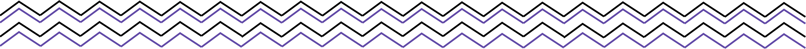
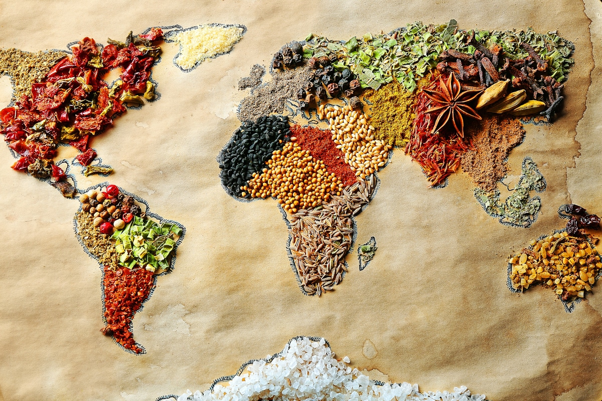
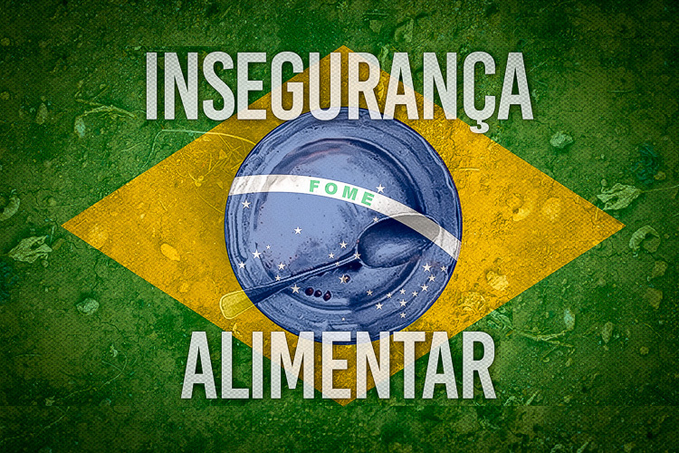

116 milhões de pessoas vivem em situação de insegurança alimentar no Brasil; consequências são nefastas principalmente para crianças
Mais da metade da população brasileira — 116 milhões de pessoas — vive com algum grau de insegurança alimentar. Ao menos 19 milhões estão passando fome, situação agravada pela pandemia e pela crise econômica do país. Os dados são de levantamento da Rede Brasileira de Pesquisa em Soberania e Segurança Alimentar e Nutricional (Rede Penssan).
Há muitas consequências decorrentes da insegurança alimentar e da fome. Segundo especialistas consultados pela CNN Brasil, elas envolvem problemas de saúde que se transformam em mazelas sociais, econômicas e educacionais e podem ser irreversíveis, sobretudo nas crianças.
Há três graus de insegurança alimentar, o leve, o moderado e o grave, que acontecem pela preocupação em não ter o que comer, pela falta de acesso pleno a alimentos até a fome de fato, explica Milene Pessoa, professora do Departamento de Nutrição da Escola de Enfermagem da UFMG, que estuda os efeitos da insegurança alimentar no Brasil.
“Qualquer grau de insegurança alimentar pode causar comprometimento na saúde, indo de deficiências de macronutrientes, como proteínas e carboidratos, à falta de micronutrientes, como minerais e vitaminas, até chegar ao ponto de o corpo parar de funcionar”, afirma Pessoa.
Segundo a nutricionista da UFMG, as principais vítimas da insegurança alimentar são as crianças, já que, no caso delas, a condição pode comprometer o crescimento e o desenvolvimento físico e cognitivo necessários para que rompam a bolha da pobreza extrema, explica a nutricionista.
Dados da Fundação Abrinq mostram que 18 milhões de crianças estão em situação de insegurança alimentar no Brasil.

Carga dupla de má nutrição
Há outro efeito da insegurança alimentar que também pode trazer sérios problemas de saúde.
É o que os nutricionistas chamam de ‘carga dupla da má nutrição’ — a coexistência entre o excesso do consumo de produtos ultraprocessados (ricos em açúcar, sal, gordura e conservantes) e a falta de nutrientes na alimentação, explica Milene Pessoa, da UFMG.
“Isso acontece em função de um padrão alimentar estimulado pelo alto consumo de ultraprocessados que, ao contrário dos alimentos básicos, não sofreram tanto aumento de preço, são mais baratos, porém muito maléficos à saúde por serem pobres em nutrientes e causam sobrepeso e obesidade”, diz Pessoa. “Então, uma mesma família que passa por uma situação de insegurança alimentar pode ter indivíduos obesos, que é a associação de diferentes graus de insegurança alimentar”, completa. Uma pesquisa realizada pela Unicef Brasil no ano passado apontou que 49% da população brasileira com 18 anos ou mais declarou ter mudado os hábitos alimentares durante a pandemia, e aproximadamente um em cada cinco brasileiros dessa faixa etária passou por algum momento em que não tinha recursos para comprar comida. Mas como a insegurança alimentar não é caracterizada somente pela quantidade, mas também pela qualidade do que se consome, algumas famílias sem problemas financeiros também podem viver sob esta condição, embora de grau leve, explica Pessoa.
“A base da alimentação saudável é a comida que nós precisamos preparar, como arroz, feijão e vegetais, que já faz parte da nossa história e cultura alimentar. Mas para que se atinja isso, há uma gama de fatores, que envolvem investimento em políticas públicas”, afirma a nutricionista.
Brasil
Domicílios com insegurança alimentar (%) 22,6
Domicílios com insegurança alimentar grave (%) 3,2
Domicílios om insegurança alimentar moderada (%) 4,6
Domicílios com insegurança alimentar leve (%) 14,8
Domicílios com segurança alimentar (%) 77,4
Fome mata 15 pessoas por dia no Brasil
Hoje, segundo dados do Ministério da Saúde, a cada dia cerca de 15 pessoas morrem de desnutrição no Brasil. Em 2017, conforme dados do Ministério da Saúde 5.653 pessoas morreram de desnutrição, ou seja, por falta do que comer, ou seja, de fome. Essa dura realidade contradiz a declaração do presidente do Brasil durante café da manhã com a imprensa estrangeira nesta sexa-feira, 19 de julho. Segundo o presidente a fome no Brasil é “uma grande mentira.” Os dados do governo insistem em desmentir o presidente. Em 2018, o Ministério da Cidadania divulgou o Mapeamentoda Insegurança Alimentar e Nutricional (Mapa InSAN), com o alarmante registro de que, dentre ascrianças com menos de cinco anos atendidas pelo Bolsa Família, 427.551 tinham algum grau de desnutrição. Já a última pesquisa do IBGE sobre o tema, 7,2 milhões de pessoas vivem em situação de insegurança alimentar grave no país, que é quando alguém passa o dia todo sem comer por falta de dinheiro para comprar alimentos e há redução quantitativa de alimentos entre crianças, que passam então, a apresentar um quadro de desnutrição, que é medido de acordo com o déficit de peso por idade ou de altura por idade.

Os dados incluem óbitos relacionados aos quadros de desnutrição proteico-calórica leve, moderada e grave.
Em todo o mundo, 821,6 milhões de pessoas passaram fome no ano passado. Em 2017, eram 811 milhões de pessoas nesta situação. Os dados são do documento ‘Estado da Insegurança Alimentar e Nutricional no Mundo’.
Com um em cada quatro brasileiros vivendo na pobreza e 13,5 milhões de pessoas vivendo na extrema pobreza, a fome faz parte da vida dos brasileiros.
De acordo com dados do Datasus, entre 2008 e 2017, ano dos últimos dados consolidados, o Brasil registrou 63.712 óbitos por complicações decorrentes da desnutrição. Isso representa uma média de 6.371 mortes por ano e 15 mortes por dia. O levantamento foi realizado pelo jornal Estadão.
Os dados incluem óbitos relacionados aos quadros de desnutrição proteico-calórica leve, moderada e grave e a condições mais raras, porém ainda existentes no Brasil, como kwashiorkor (desnutrição provocada pela ingestão inadequada de proteínas) e marasmo nutricional (condição na qual a falta de calorias leva a uma importante perda muscular e atrofia de alguns órgãos).
Nos últimos dois casos, a falta de nutrientes faz com que os doentes, apesar da magreza, apresentem um inchaço abdominal significativo porque, sem proteínas, o corpo não consegue fazer o transporte devido dos líquidos.

Sobre o MINRYL:
O MINRYL é um grupo feminino com projeto de conscientizar e ajudar nos Objetivos de Desenvolvimento Sustentável da ONU atravéz do uso da tecnologia para auxiliar e ter amplo alcance.
O MINRYL apoia os Objetivos de Desenvolvimento Sustentável da ONU:
Fale conosco
Para falar com a gente, ligue para 0800 580 2378


{kind=link}